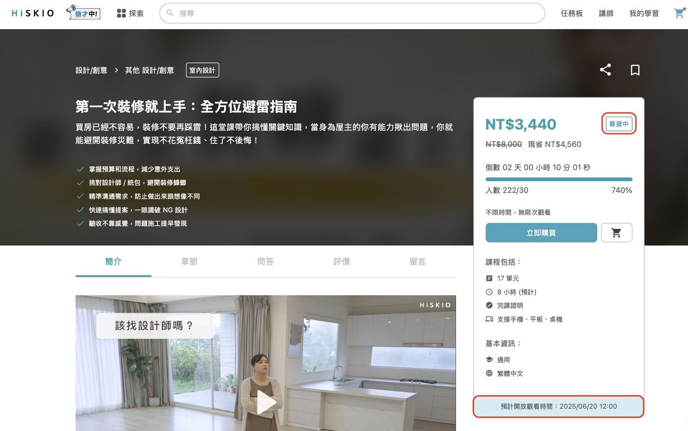
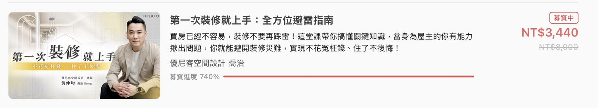

什麼是募資課程？
為了確保講師能開設符合學生需求的課程，HiSKIO 推出課程募資制度，在正式開課前透過募資制度的設立答標門檻的方式，來確認講師設計的課程是符合學生需求，不但減少講師開設沒有需求的課程而耗費時間與精力，在募資階段也能提供學生優惠價格。
如何分辨募資課程？
1.在課程銷售頁面，課程價格旁將標記「 募資中 」，並且標示此課程的「預計開放觀看時間」

2.當你搜尋課程時，課程會標記「募資中」狀態

募資課程如何購買？
與一般課程購買方式相同，歡迎參考「 課程購買 」。
募資課程可以試閱嗎？
由於募資課程講師會於課程募資成功後才開始製課，因此不提供課程試閱，您可以透過課程簡介與簡介影片確認課程內容是否符合您的需求，若對於課程有任何疑問，也可以在「課前問答」中向講師提問喔！
募資課程如何退款？
募資課程原則上於課程正式上架前皆可申請全額退費，詳情可參閱「 課程退費 」說明。
更新時間： 27/05/2025